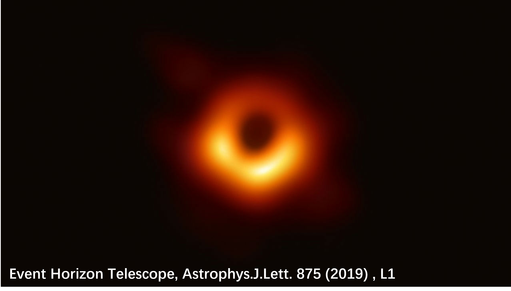
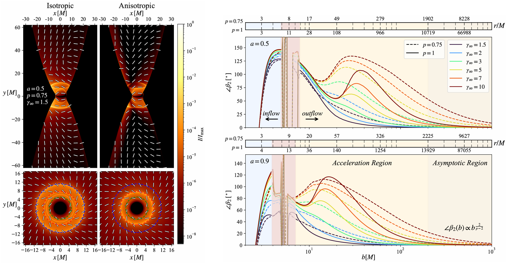
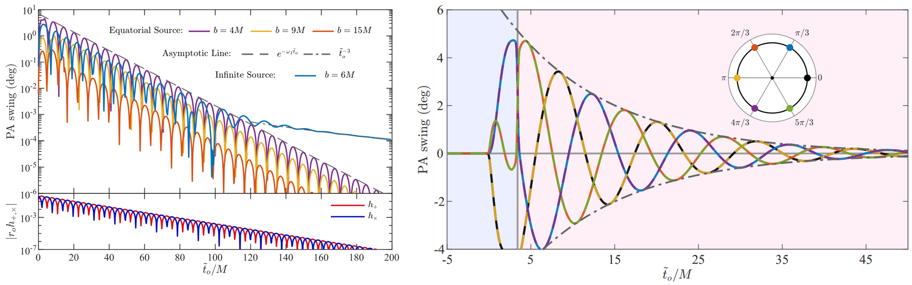
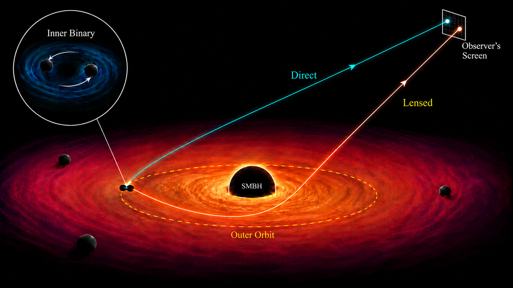
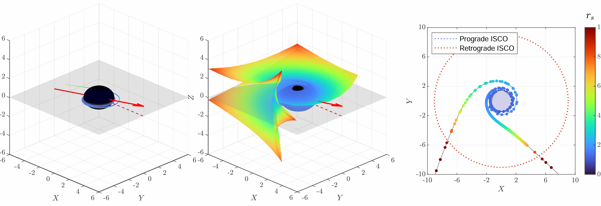
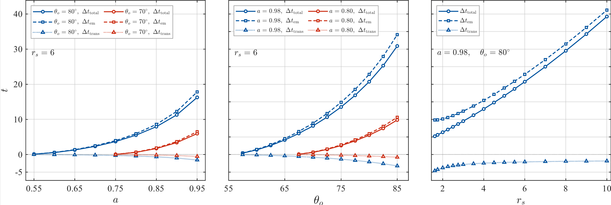

I study the propagation, interactions, and observable effects of
light and gravitational waves in the strong gravitational fields
of black holes. My recent work focuses on black hole polarimetry,
the effects of gravitational perturbations on light, and the
strong lensing and amplification of gravitational waves by
rotating black holes.
01 / RESEARCH AREA
Black Hole Polarimetric Imaging
Polarimetric imaging adds a crucial dimension to our understanding
of the environments around supermassive black holes. It carries
information about magnetic fields, emitting plasma, and the
spacetime geometry through which light travels. We study
polarization patterns near the event horizon and farther out
along relativistic jets, exploring how different physical
effects shape these patterns in each region.

The Event Horizon Telescope (EHT) image of M87*
A distinctive signature of rotating black holes
Near-Horizon Polarization
Near the event horizon of a rotating black hole, magnetized
accretion flows exhibit a common pattern of motion. We showed
that, under the assumptions of our model, this behavior produces
a distinctive synchrotron polarization pattern, which we call
near-horizon polarization (NHP). The pattern is largely
insensitive to the details of the accretion flow, with its
structure determined by black hole spin and the observer's
viewing direction.
Testing this prediction will require future very-long-baseline
interferometry capable of resolving linear polarization in the
immediate vicinity of the event horizon. We are extending the
calculation beyond the leading-order near-horizon approximation
and exploring whether similar polarization patterns arise in
rotating spacetimes beyond Kerr.
Left: theoretical illustration of near-horizon polarization
directions and reference contours. Right: predicted
near-horizon polarization curves for different black hole
spins and viewing angles.
Black hole jets connect the physics of the central engine to
emission on much larger scales. Within a stationary,
axisymmetric framework of general-relativistic
magnetohydrodynamics, we developed semi-analytic jet models
and polarized imaging templates spanning multiple spatial
scales.
These models show how plasma inertia, magnetic-field winding,
jet collimation, and black hole spin shape the intensity and
polarization of emission across different regions of a jet.
They offer possible physical interpretations of future
polarization data. Applications to individual sources will
still require detailed consideration of their emission
mechanisms and observational conditions.

Left: intensity images and polarization structure from
GRMHD jet models. Right: variation of the jet polarization
angle with spatial scale for different model parameters.
Electromagnetic Signatures of Gravitational Perturbations
A passing gravitational perturbation can alter the trajectory
of a light ray and the transport of its polarization. We studied
a model in which light is emitted near a black hole during
ringdown. Analytic calculations and numerical simulations show
that spacetime perturbations can induce changes in the source's
apparent position and the observed polarization angle.
In principle, these variations could carry information about
the gravitational perturbations that produce them. Our work
also provides a framework for calculating light propagation in
perturbed spacetimes, with potential applications to other
systems, including extreme-mass-ratio inspirals. The
observability of these signals in specific systems remains
a subject for further study.

Time evolution of the polarization angle light emitted
near a Kerr black hole perturbed by a fundamental
quasinormal mode.
Like light, gravitational waves can be lensed by massive
objects. When their wavelengths are sufficiently short compared
with the relevant lensing scales, geometric optics provides
a way to study their propagation near black holes. Although
no gravitational-wave lensing event has been confirmed,
understanding the possible signal signatures is important
for future searches.

A conceptual illustration of gravitational-wave lensing geometry.
Using Kerr black hole lensing theory and the geometry of
caustic surfaces in strong gravitational fields, we calculated
the time-domain structure of lensed signals. For a range of
source and observer configurations, the model predicts a
sequence of brief signal enhancements. Their arrival times
and the intervals between them depend on black hole spin
and the source–observer geometry.

Theoretical lensing geometry for a Kerr black hole, showing
the relationships between source position, viewing direction,
and strong-field structure.

Predicted lensing time delays for different black hole spins
and geometric configurations.
We are also investigating how gravitational Faraday rotation
affects the evolution of gravitational-wave polarization
during propagation through rotating spacetimes.
Professor Chen has guided me throughout my academic journey,
helping us grow through his thoughtful and candid advice.
His longstanding research focuses on string theory and holographic duality.
In recent years, he has also turned his attention to
black hole astrophysics.